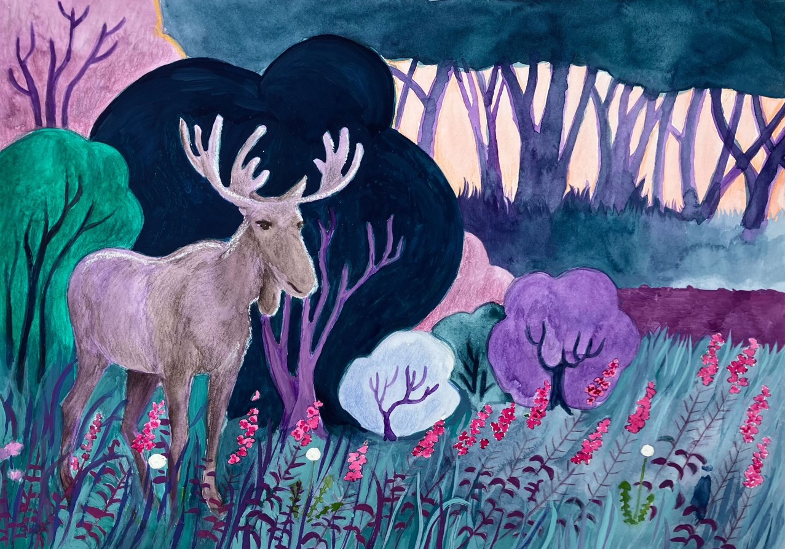

Om bogen
Jordbærkongens datter er en billedbog om en pige, der vokser op på landet i Danmark i efterkrigstiden.
Historien bygger på virkelige minder fra min mors barndom.

Bogen er skabt for at bevare disse minder og give børn et indblik i livet på landet i gamle dage.